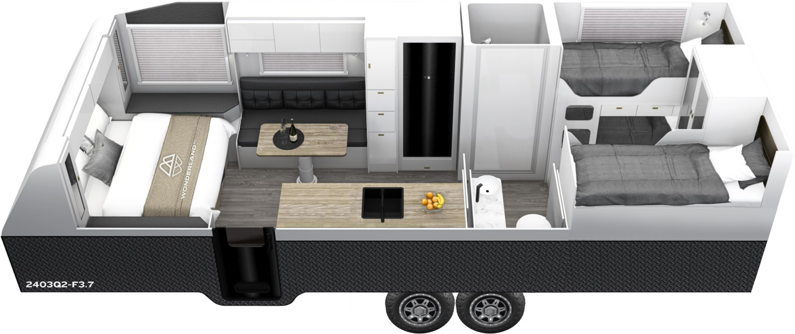

A queen bed and a lounge up front, tucked away from the kids at the rear.
A large, full-width ensuite right in the middle of the van.
Three bunks at the back for the kids, with storage packed throughout.
We’d lived in a van for 18 months, so we knew
exactly what we’d change. Wonderland RV
got it right. It’s home for the five of us.